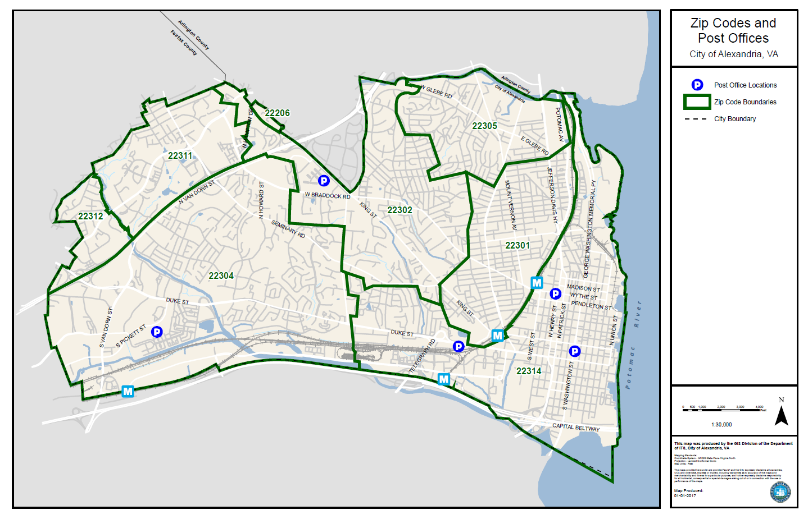

The city of Alexandria is one of Virginia's largest cities in terms of population. In recent years especially, its seen much growth industrially and economically. This growth can be seen reflected in the city's taxation and rising housing costs. However, our visualization posits that this growth was unequally distributed so to speak. This is to say, 2 of the 7 zipcodes within Alexandria's borders are experiencing financial growth that seemingly dwarfs the rest of Alexandria's municipalities. Previous iterations of this visualization further supported this perspective as our color scalar, depicting these averages, was completely thrown off by the highest value properties. That is to say, regardless of the growth in the averages for property tax and assesment value, those changes were imperceptible because our color scale was tied to the range of every entry, as opposed to the range of averages. This revealed that the distribution of high value properties is actually low, as their contribution to the average, despite their exceedingly high values, couldn't skew the aggregate toward that direction.
In this project, real world data on housing info in Alexandria was used to observe tax values over time.
We acquired this data from a web-scraping algorithm originally designed by Barrett Dalbec, one of Noah's colleagues. It worked by sending requests to alexandria.gov's realestate portal, loading each page and recording the necessary information in a dataframe, which we packaged into a csv. This scraper produced a dataframe listing the assessment values as well as the property taxes paid for every address on record. This scraper required around the clock supervision, and some minor adjustments, to procure all the information we needed. As a result of the sheer scale of the number of requests we were making, this program took over 20 hours to successfully run.
This dataset comprised of nearly 40 thousand rows of information.
For our main plot, the Folium library was used. We decided to go with a choropleth with a time slider to show the change of taxes over time.
Unfortunately, because our webscraper didn't acquire all the necessary information to geocode, we needed to access the Nominatim API to retrieve the necessary information for geocoding. To get correct coordinate locations for our eventual folium map, the Nominatim geocoding API was used to convert the addresses to lat/long coordinates. Ultimately, we did not end up using the coordinate data for each property since it made the visualization too cluttered.
One of our first major issues with this was that our original dataset did not contain addresses with zip codes, so the API pulled coordinates of other matching addresses from other zip codes. This inaccuracy ranged anywhere from cities next to Alexandria to Ontario, Canada. Because of this, much of the coordinate data was initially unusable.
Another issue we ran into with a simple plot of all the points is that choropleths generally work better showing larger, more genralizable regions. To accomodate for this, we decided to plot the data grouping by zip code. As there was no readily avaiable geojson file for this purpose, a geojson file was created by the group with geojson.io, using the following Alexandria zip code map and the official Alexandria boundaries json file provided by the Alexandria Open Data project as reference to map the points accurately.
Beyond the geojson boundaries, we also ran into another familiar issue with our plan - our original dataset included addresses without the zip codes. Once we recieved the zip codes, it seemed like all of our problems would be fixed. Because of our new method, exact coordinates for each address would also be unecessary, as we would just need to map each address's data to its respective zip code.
Our zip code issues were solved using the USPS API to lookup zip codes to addresses. Since the addresses only included the street address and not the city or state, the city of Alexandria, VA was hard coded into the request. The API allowed for up to 500 requests/second and it took around 1h to From this point, it was only a matter of plotting our data to the geojson boundaries in our TimeSliderChoropleth.


Of course, our initial plots are very simple 2 axis graphs. We can see that throughout the last decade, the average assessment and taxes of properties has gone up regardless of zip code. That being said, zipcodes like 22311 and 22314 are growing far more dramatically.